RTR: Imperium Surrectum
RTR: Imperium SurrectumThe Achaean League units in 0.6
2022-11-19 · ahowl11

Hello! We have been taking some much needed R&R since 050 released, but that hasn't kept us working on RIS 060! We are in beta mode now and we have some stuff to show off in the coming weeks and months. For those interested in when we will be releasing it will be around late January, as most of us will be very busy with family during the holiday season.
Now, to kickoff a new Dev Diary! The first faction of 060 to get brand new unit roster overhaul with the new RR models will be showcased today.
This faction has a rich history in our mod timeframe, and they have a very well documented military. They went through extensive reforms as they grew in power, and we will be representing that. Without further delay, we give you... The Achaeans!
AKONTISTAI
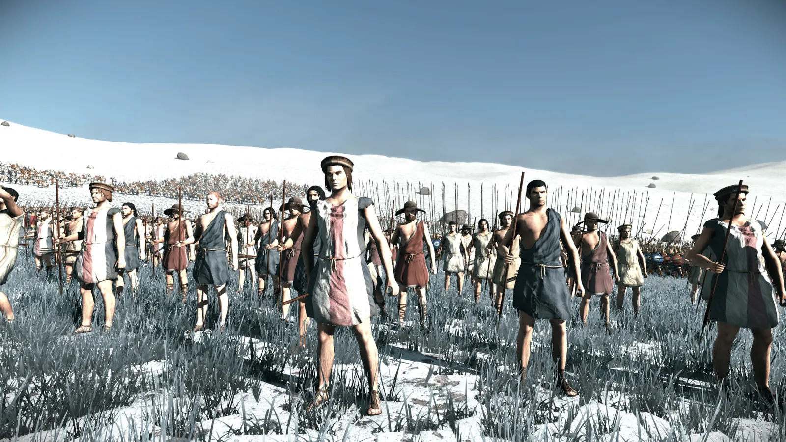
SLINGERS
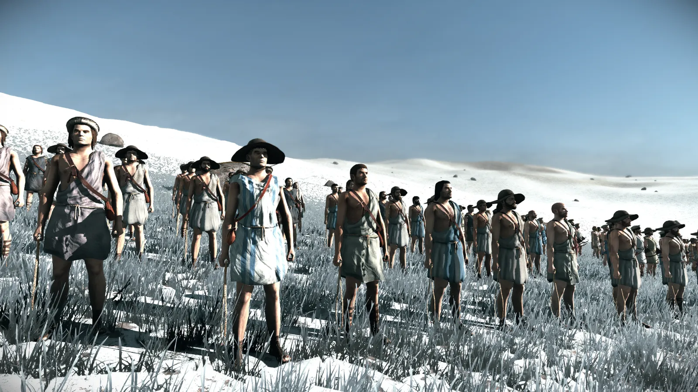
ARCHERS
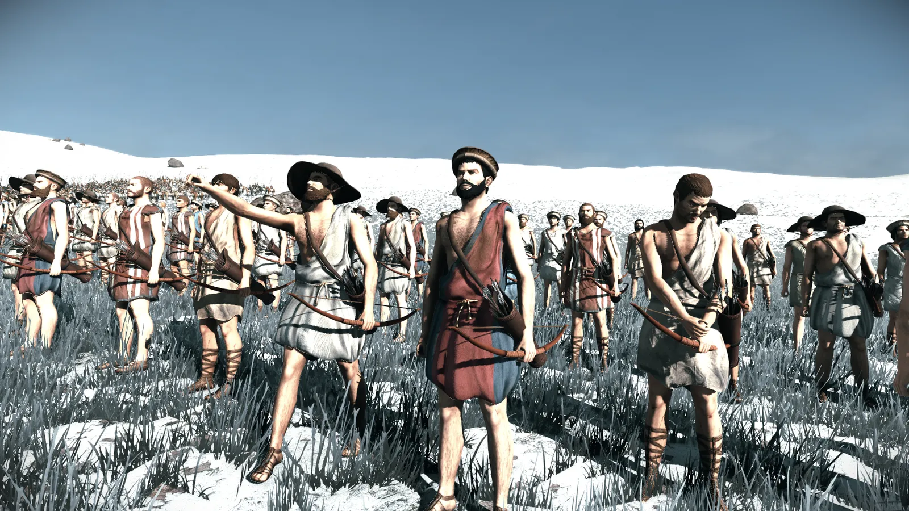
NEO-CRETAN EPHEBES
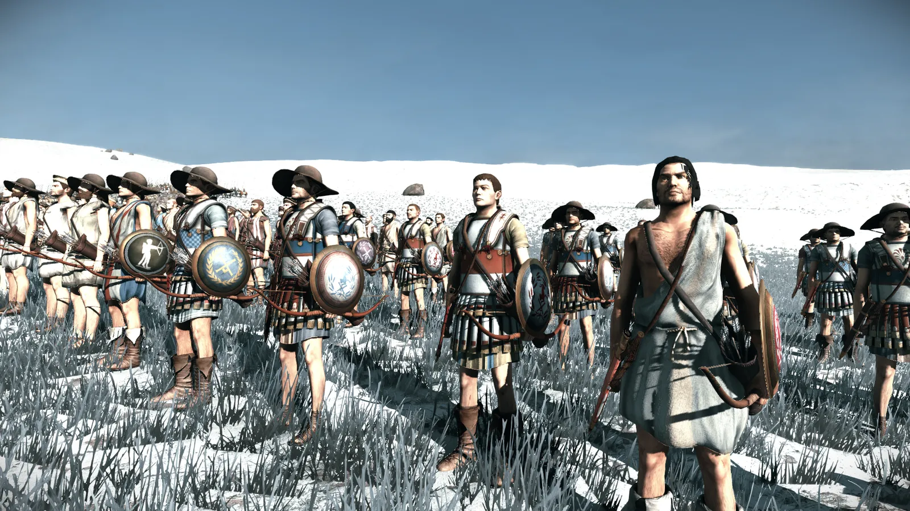
ACHAEAN PELTASTS
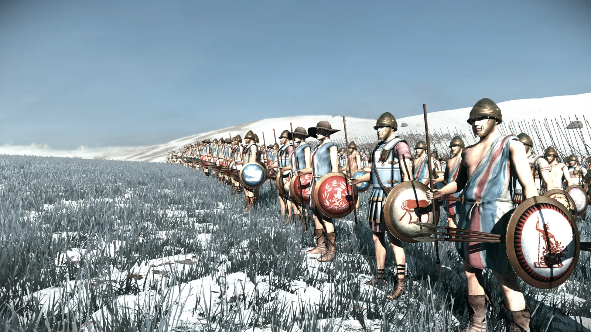
FOREIGN THUREOPHOROI
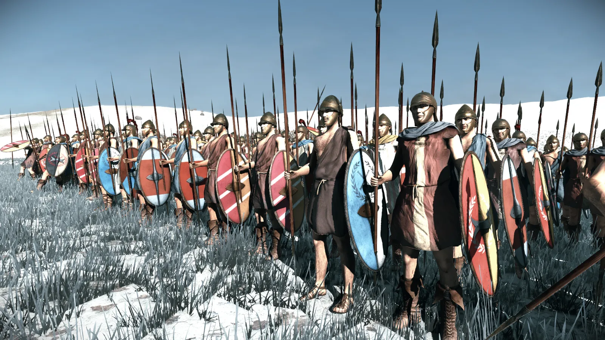
ACHAEAN HOPLITES
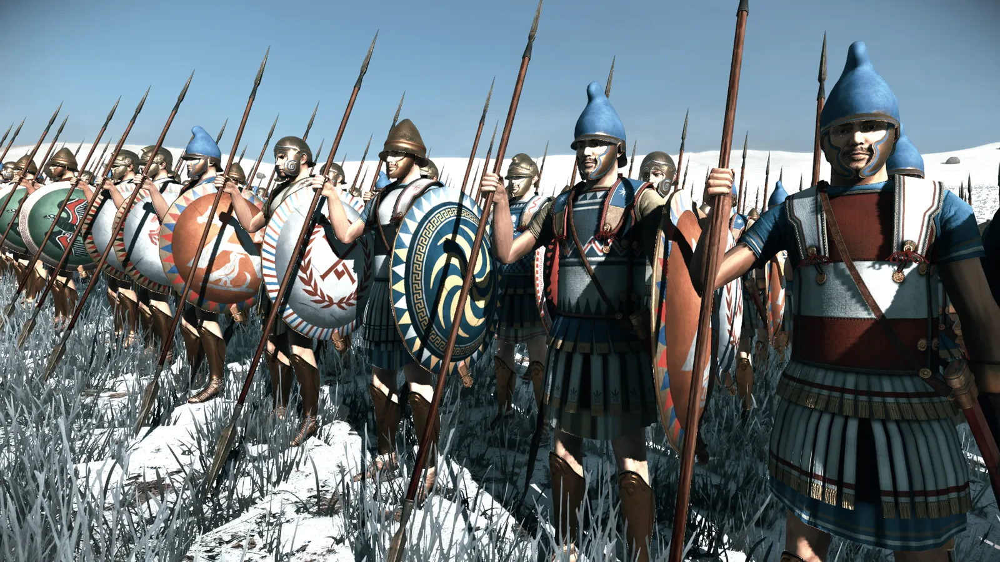
PRODROMOI
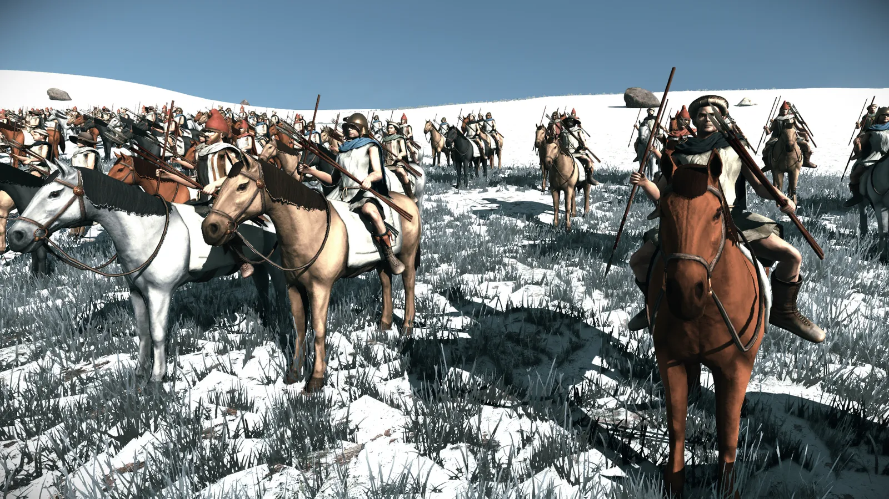
ACHAEAN XYSTOPHOROI
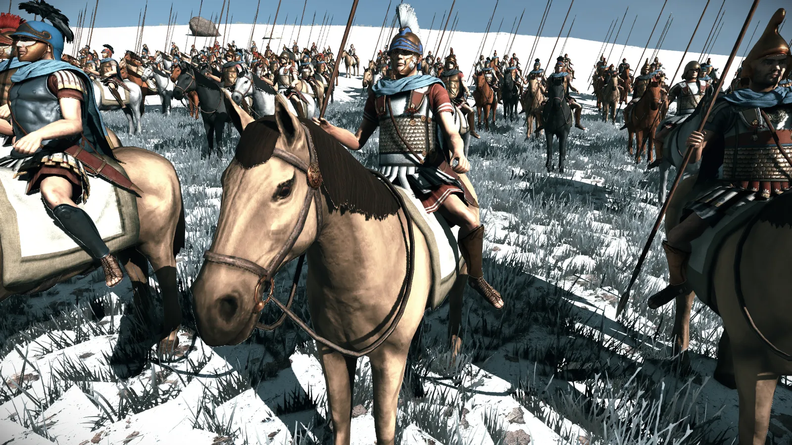
ACHAEAN EPILEKTOI
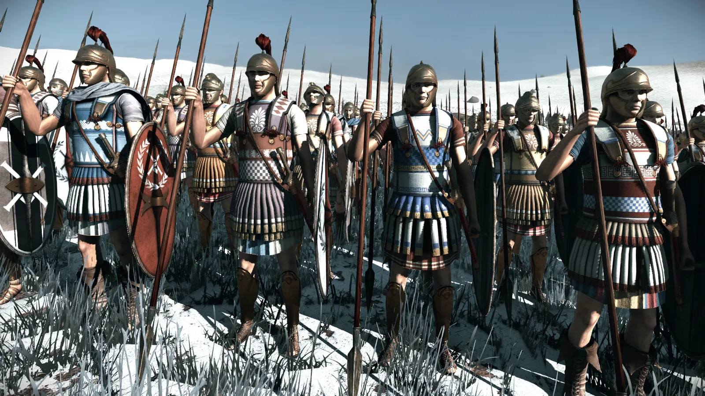
Now, the Achaean Reform units!
ACHAEAN THUREOPHOROI
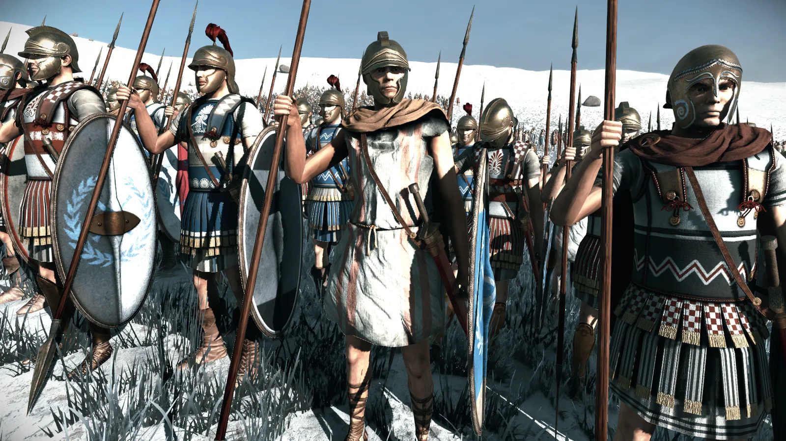
ACHAEAN THORAKITAI
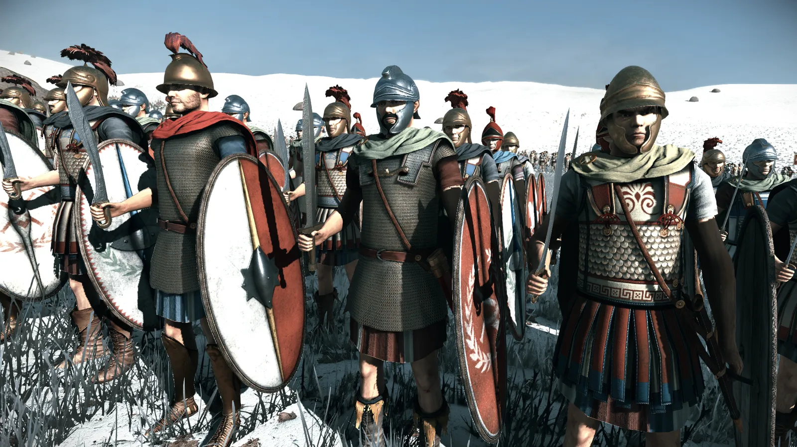
ACHAEAN PELTOPHOROI
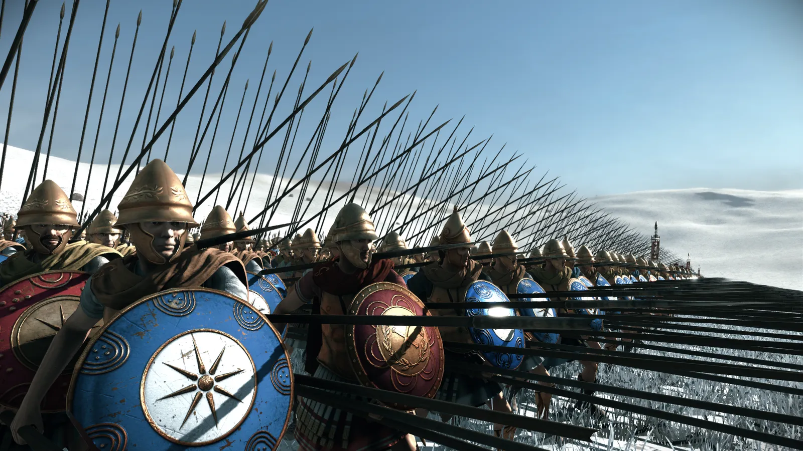
MEGALOPOLITAN CHALKASPIDES

ACHAEAN EPILEKTOI PHALANGITES
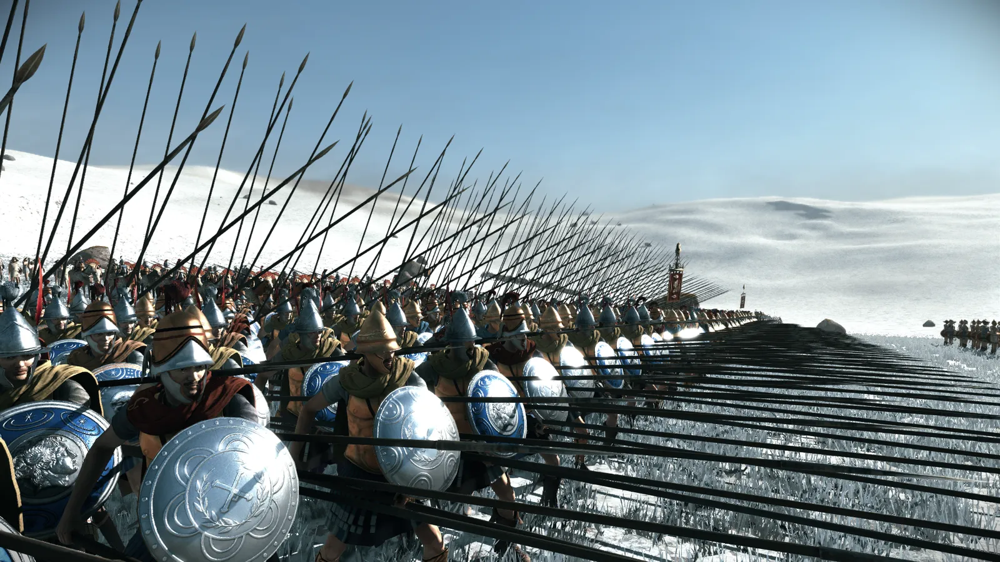
ACHAEAN XYSTOPHOROI (LATE)
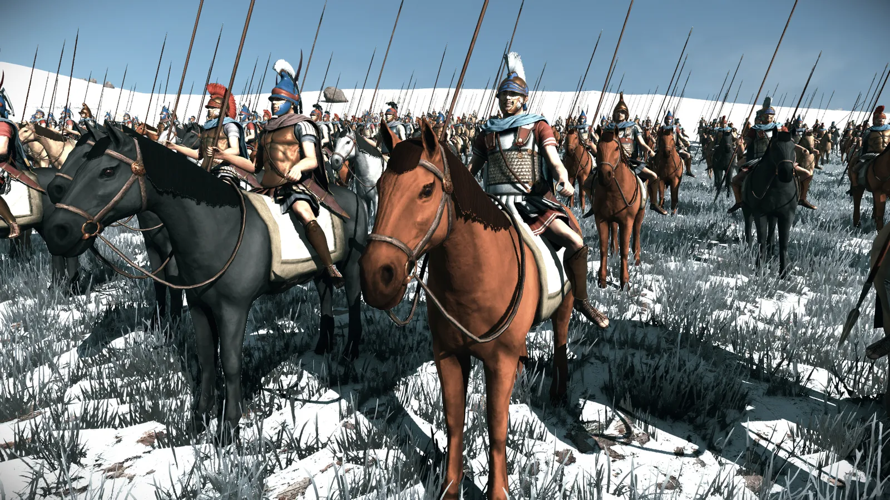
ACHAEAN ASPIDOPHOROI
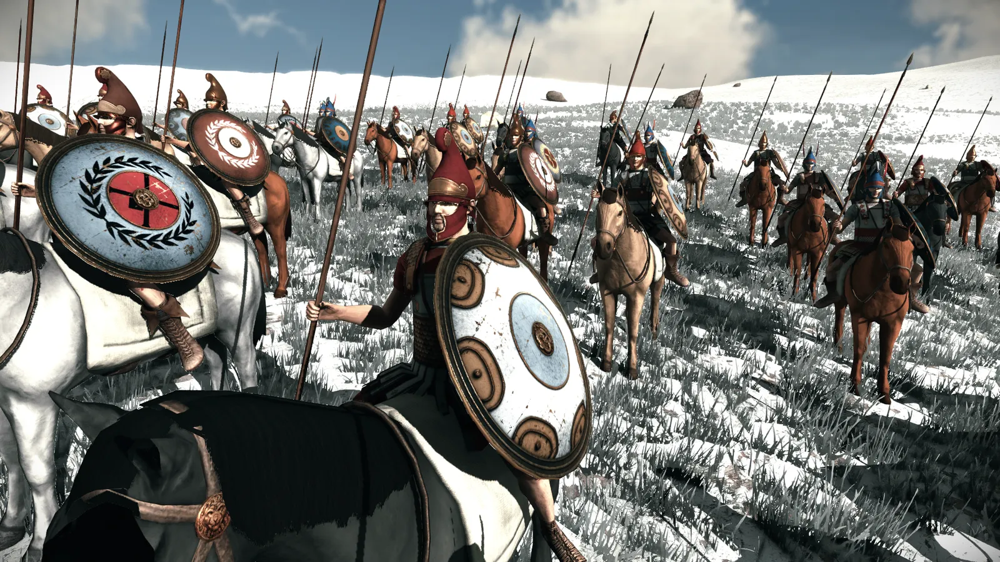
That does it for the Achaean League unit preview! Our beta will be out sometime soon, and we are about two months away from another release. We will have another DD out in the next few days, previewing another unit overhaul!